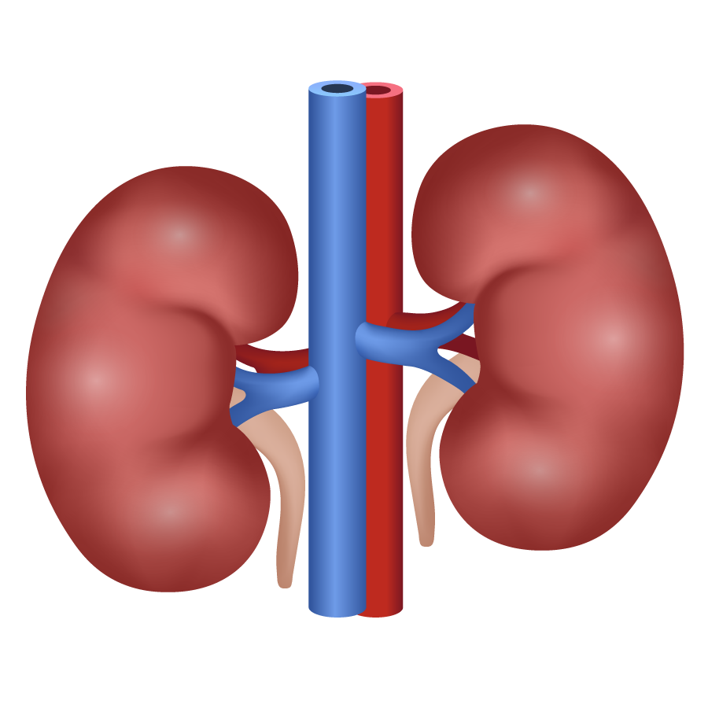
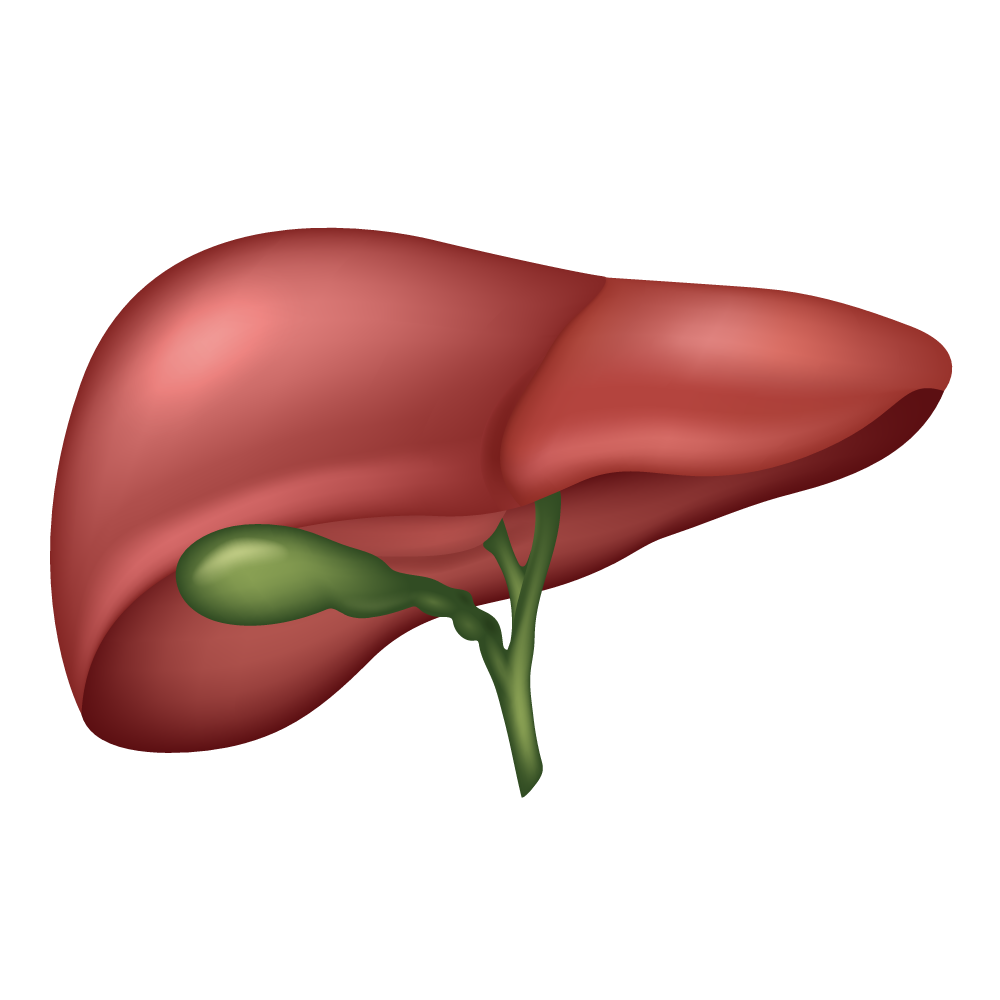
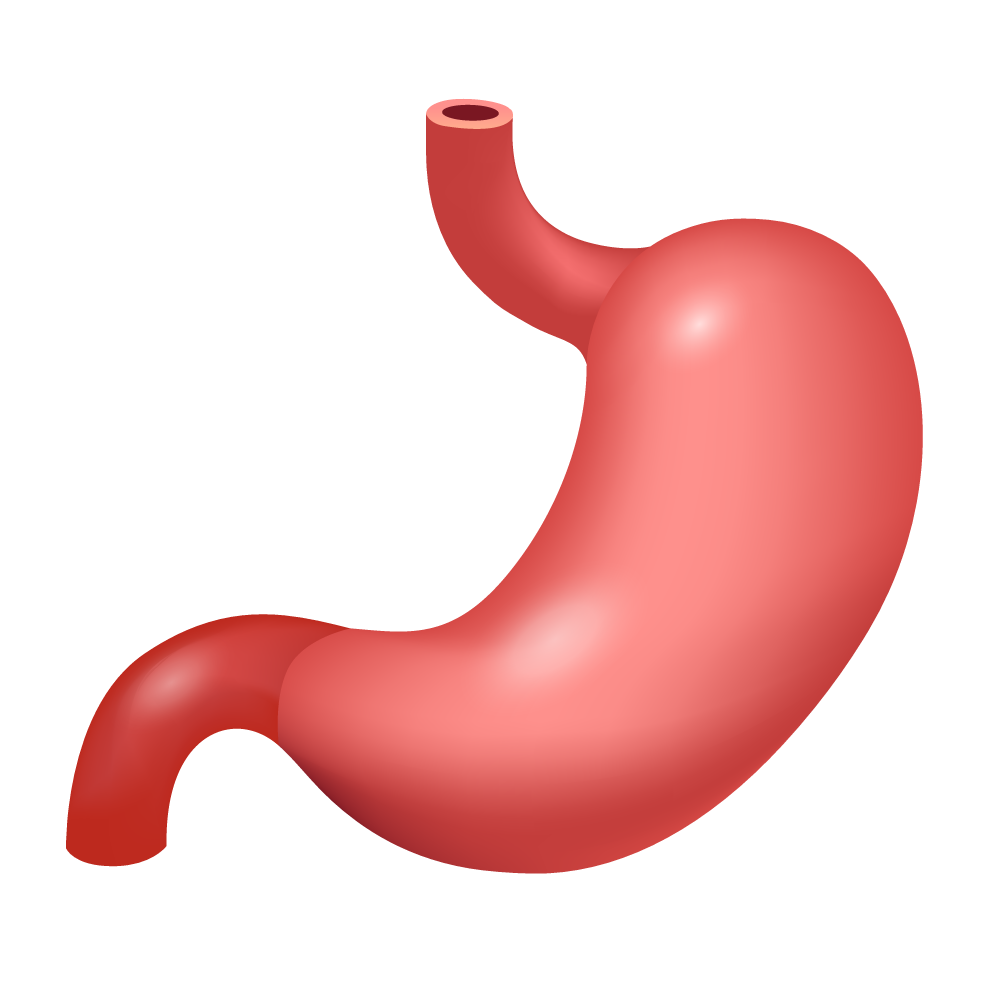
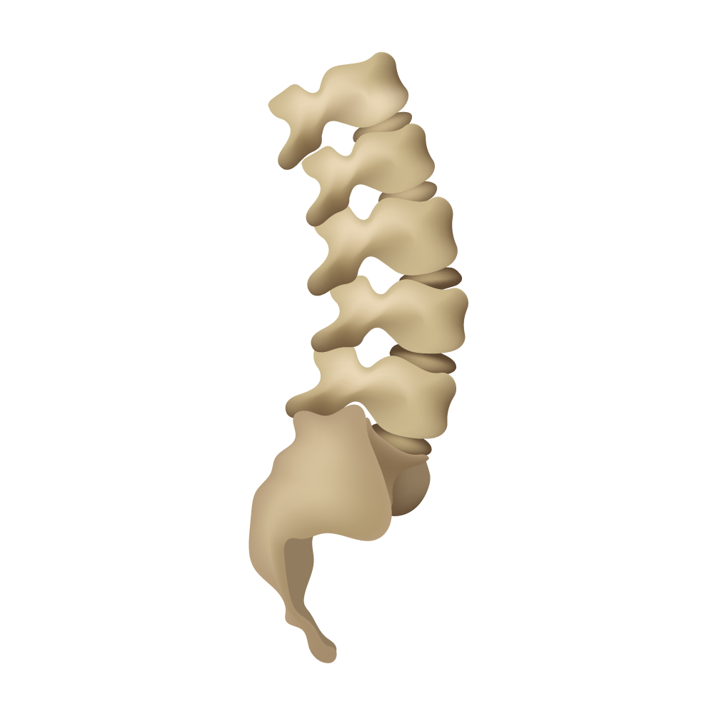
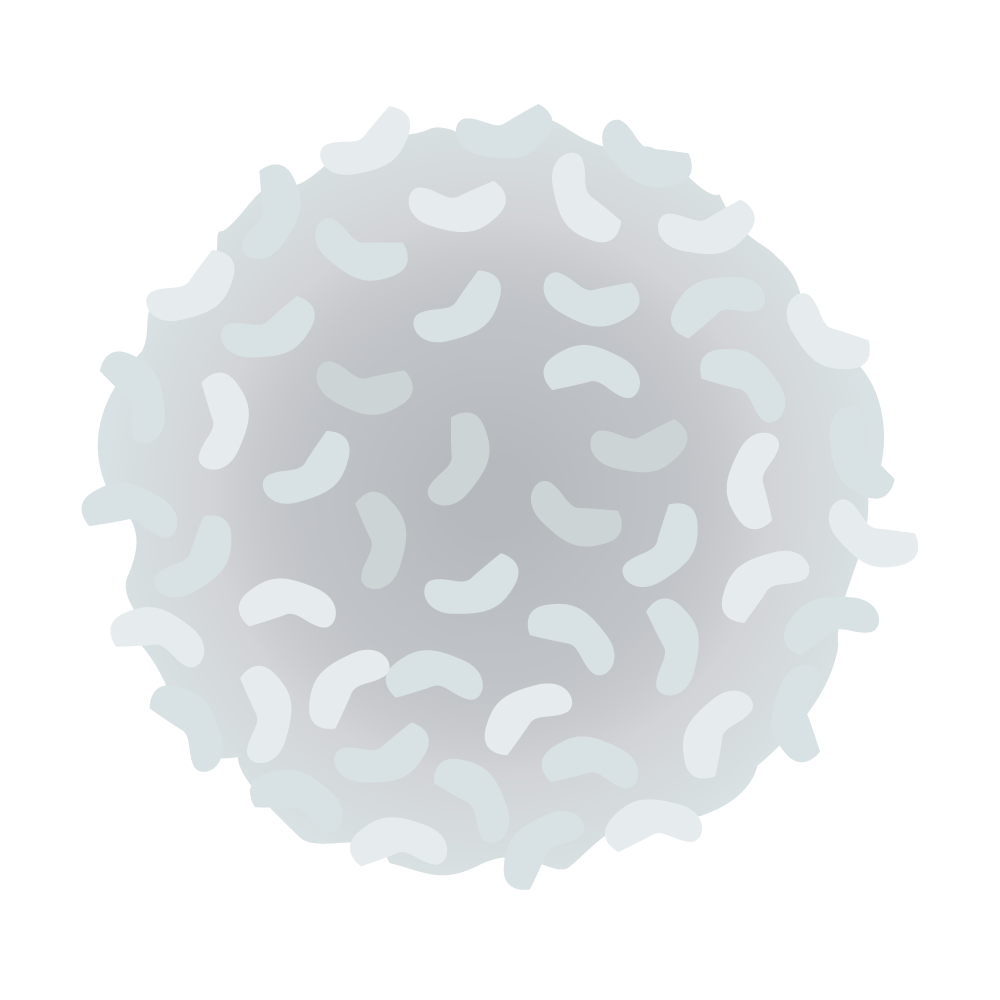
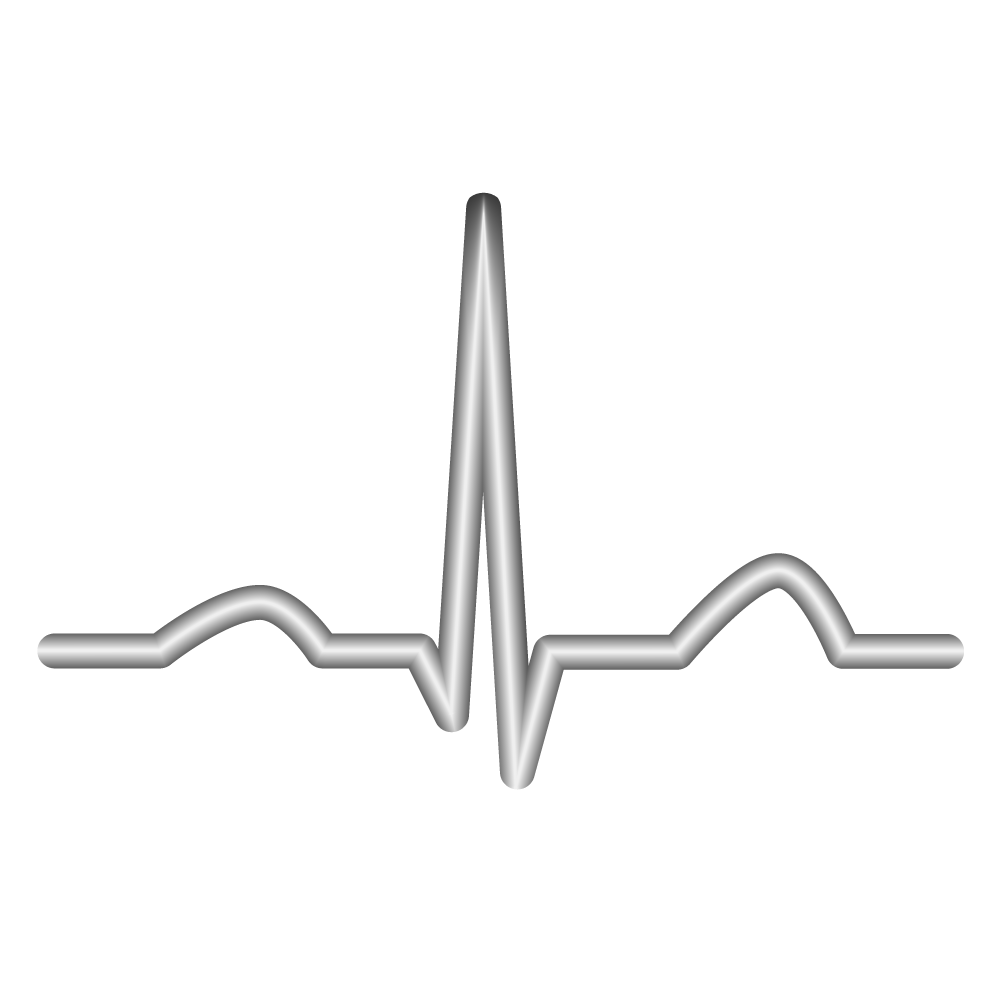

A single AMIA letter of support to the Unicode Consortium, modeled on the one ACEP wrote, affirming the value of a standardized set of medical emoji. It commits AMIA to nothing else; we handle the Unicode proposals, the usage evidence, and the artwork. A turnkey draft letter is attached.






What is still missing is the voice of organized informatics. That is AMIA.
Medical emoji are standardized clinical iconography: a controlled-vocabulary, interoperability, and patient-communication problem. Unicode rewards two things: real-world usage (we build that) and a recognized authority affirming a symbol matters and is well-defined. The national informatics body is the ideal source of the second.